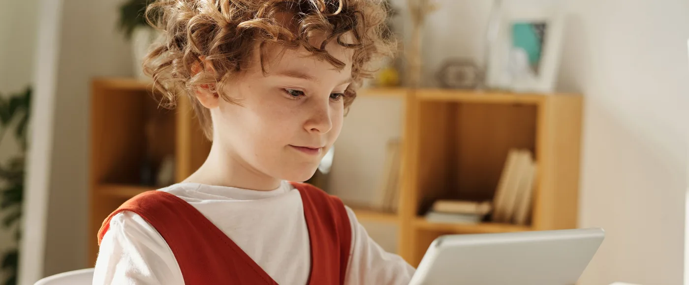

Las pantallas forman parte de la vida cotidiana de muchas familias. Televisión, tabletas, móviles, ordenadores o videojuegos pueden ocupar distintos momentos del día y cumplir funciones muy diferentes.
Por eso, hablar de pantallas no tiene por qué significar hablar únicamente de cuánto tiempo se utilizan.
También importa para qué se utilizan, qué lugar ocupan dentro del ocio familiar y qué otras experiencias tienen los niños a su alrededor.
El objetivo no tiene que ser conseguir una rutina completamente libre de pantallas. Para muchas familias, eso no sería realista ni necesario.
Puede ser más útil buscar un equilibrio en el que el ocio digital conviva con el juego, la lectura, la creatividad, el movimiento, las experiencias fuera de casa y el tiempo compartido.
Una de las primeras cosas que conviene tener en cuenta es que no todo uso de una pantalla representa la misma experiencia.
No es igual:
Incluso dentro de una misma actividad pueden existir experiencias muy diferentes.
Por eso, en lugar de pensar únicamente en la pantalla como un objeto, puede ser más útil preguntarse:
¿Qué está haciendo el niño con ella?
Esta pregunta permite entender mejor qué lugar ocupa realmente dentro de su tiempo libre.
Una tarde familiar no tiene por qué dividirse entre "pantalla" y "sin pantalla".
Puede haber momentos diferentes.
Un rato de videojuego puede convivir con una lectura.
Una película puede ser el comienzo de una conversación.
Escuchar música puede acompañar una actividad creativa.
Buscar información sobre un tema puede despertar curiosidad por experimentar con algo fuera de la pantalla.
La clave está en evitar que una única forma de entretenimiento termine ocupando todo el espacio disponible.
Un ocio variado ofrece más posibilidades para descubrir qué interesa al niño.
Si quieres más ideas para acercar la lectura al día a día, puedes leer nuestro artículo sobre lectura y cultura infantil.
Cuando una pantalla se convierte en la respuesta automática cada vez que aparece un momento de aburrimiento, puede resultar interesante introducir otras alternativas.
No hace falta tener preparada una actividad diferente para cada minuto libre.
Simplemente puede ayudar disponer de algunas opciones que el niño conozca y pueda elegir.
Por ejemplo:
No todas funcionarán siempre.
Lo importante es que existan alternativas reales entre las que elegir.
Cuando un niño dice que está aburrido, la solución no siempre tiene que ser ofrecerle inmediatamente algo que hacer.
El aburrimiento puede ser también un momento de transición.
Puede llevar a:
Los adultos estamos acostumbrados a llenar rápidamente los momentos vacíos, pero no todos los espacios de tiempo necesitan estar ocupados.
A veces, no tener una actividad preparada es precisamente lo que permite que aparezca una idea nueva.
No es necesario convertir toda la casa en una zona libre de pantallas.
Puede ser más sencillo establecer determinados momentos en los que la familia sabe que las pantallas no son la actividad principal.
Por ejemplo:
La idea no es crear una lista interminable de prohibiciones.
Es establecer pequeños espacios en los que la familia pueda hacer otras cosas sin que la pantalla compita por la atención.
Además de los momentos, algunas familias pueden encontrar útil asociar determinados lugares a otras actividades.
Por ejemplo:
No hace falta que estas reglas sean rígidas.
Simplemente ayudan a que el niño asocie determinados espacios con diferentes formas de ocio.
Si quieres más ideas para organizar este tipo de espacios, puedes leer nuestro artículo sobre organización y hogar.
Decir simplemente "deja la pantalla y juega" no siempre funciona.
Si queremos ofrecer alternativas, es importante que sean alternativas que el niño encuentre atractivas.
Puede ser útil observar qué actividades despiertan su curiosidad.
Quizá le guste:
A partir de ahí es más fácil ofrecer opciones que tengan posibilidades reales de competir con el atractivo de una pantalla.
Una de las dificultades de intentar reducir el ocio digital es pensar que los adultos tienen que convertirse en animadores permanentes.
No debería ser así.
Las alternativas al ocio digital también pueden ser actividades que el niño pueda realizar con cierta autonomía cuando sea apropiado:
El objetivo no es sustituir una pantalla por una lista interminable de actividades organizadas por los adultos.
Es conseguir que exista un entorno suficientemente variado para que el niño pueda encontrar diferentes formas de entretenerse.
No todo ocio tiene que tener un objetivo.
Un niño puede pasar un rato construyendo algo sin seguir instrucciones.
Puede inventar una historia con unos muñecos.
Puede mezclar materiales y ver qué ocurre.
Puede transformar una caja en una casa, un vehículo o cualquier otra cosa.
Este tipo de juego puede parecer menos estructurado que una actividad preparada, pero forma parte de una forma de ocio muy importante:
jugar porque sí.
No todo tiene que enseñar algo, producir algo o terminar con un resultado concreto.
Las actividades físicas no tienen que convertirse necesariamente en deporte organizado.
Pueden ser cosas sencillas:
Lo importante es que el ocio familiar no quede limitado a actividades sedentarias.
Y, de nuevo, no hace falta que cada salida sea una actividad planificada.
Salir juntos también puede ser simplemente salir.
Los días en los que no se puede salir pueden ser especialmente complicados.
Pero también pueden convertirse en una oportunidad para recuperar actividades que normalmente quedan en segundo plano.
Algunas posibilidades:
No hace falta preparar una programación completa.
Una o dos propuestas pueden ser suficientes.
Los desplazamientos largos son una de las situaciones en las que las pantallas pueden resultar especialmente prácticas.
Y no hay nada malo en utilizarlas si la familia considera que les ayudan.
Pero también puede ser interesante llevar algunas alternativas para determinados momentos:
La edad del niño, la duración del viaje y las circunstancias concretas determinarán qué opciones tienen sentido.
Lo importante es que la pantalla no tenga que ser necesariamente la única herramienta para hacer más llevadero el trayecto.
Los niños observan constantemente lo que ocurre a su alrededor.
Si los adultos utilizan el móvil continuamente durante las comidas, las conversaciones, las salidas o los momentos familiares, resulta más difícil transmitir que también existen momentos en los que podemos dejarlo a un lado.
No hace falta intentar dar ejemplo de manera perfecta.
Pero sí puede ser útil preguntarnos:
¿Qué relación tenemos nosotros con las pantallas?
A veces pequeños cambios en los hábitos de los adultos pueden modificar mucho el ambiente familiar.
Dejar el teléfono a un lado durante una conversación o una comida también comunica que ese momento merece nuestra atención.
Las normas relacionadas con las pantallas suelen funcionar mejor cuando son claras y realistas.
En lugar de crear una lista enorme, puede ser más fácil establecer unas pocas reglas familiares.
Por ejemplo:
Las normas deben adaptarse a la edad y a las circunstancias de cada familia.
Y también pueden cambiar con el tiempo.
Una regla que simplemente dice "porque lo digo yo" puede ser difícil de comprender.
Cuando sea apropiado, explicar el motivo puede ayudar al niño a entender que las normas no pretenden castigar el uso de las pantallas.
Pueden existir porque:
El objetivo es que progresivamente pueda entender cómo gestionar diferentes actividades, no simplemente obedecer una lista de prohibiciones.
Este puede ser uno de los momentos más complicados.
Si una actividad resulta especialmente entretenida, pasar de ella a otra cosa puede generar frustración.
Puede ayudar anticipar el cambio.
Por ejemplo:
"Cuando termine esta parte, la dejamos."
o:
"Dentro de un rato vamos a cenar."
También puede ser útil tener preparada la siguiente actividad.
Pero no existe una fórmula que funcione siempre.
La reacción dependerá de la edad, del tipo de actividad y del momento.
Lo importante es intentar mantener unas normas coherentes y evitar que cada final de pantalla se convierta en una negociación interminable.
La vida familiar cambia.
Hay días tranquilos y días caóticos.
Hay momentos en los que una pantalla resulta especialmente útil.
Un viaje puede requerir una organización diferente.
Un día de enfermedad puede ser completamente distinto.
Las vacaciones también cambian las rutinas.
Por eso, el objetivo no debería ser conseguir un equilibrio perfecto todos los días.
Es más realista pensar en el conjunto de la vida familiar.
Habrá días con más pantallas y días con menos.
Lo importante es que existan otras formas de ocio y que las pantallas no terminen ocupando todo el espacio.
Además del tiempo, puede ser interesante observar cómo reacciona el niño ante determinadas actividades.
Pregúntate:
Estas preguntas pueden ayudar a las familias a observar sus propios hábitos sin necesidad de aplicar una fórmula universal.
No siempre tenemos que pensar en la pantalla como algo separado del mundo real.
Una película puede despertar interés por una historia.
Un videojuego puede llevar a investigar sobre un tema.
Un documental puede despertar curiosidad por la naturaleza.
Una canción puede llevar a descubrir un estilo musical.
Una aplicación creativa puede convertirse en el comienzo de un proyecto.
Después de una experiencia digital podemos preguntarnos:
"¿Qué podemos hacer con esta curiosidad fuera de la pantalla?"
Ahí puede aparecer una oportunidad interesante.
También es importante recordar que el ocio no tiene que producir un aprendizaje concreto.
Una película puede ser simplemente divertida.
Un videojuego puede ser simplemente entretenido.
Un paseo puede ser simplemente agradable.
Un juego puede no tener ninguna finalidad educativa.
No hace falta justificar constantemente cada actividad.
El tiempo libre también sirve para disfrutar.
Lo importante es que exista variedad y que la familia encuentre un equilibrio que funcione para ella.
Las pantallas forman parte de la vida cotidiana y probablemente seguirán formando parte de ella.
La cuestión no tiene por qué ser eliminarlas completamente.
Puede ser mucho más útil preguntarse qué lugar ocupan dentro del conjunto del ocio familiar.
Puede ayudar:
No se trata de conseguir que cada tarde esté perfectamente organizada ni de eliminar todo el ocio digital.
Se trata de que haya espacio para jugar, leer, crear, moverse, conversar, descubrir y también disfrutar de una pantalla cuando tenga sentido.
Porque un buen equilibrio no consiste en que una actividad desaparezca.
Consiste en que haya sitio para muchas formas diferentes de disfrutar del tiempo libre.